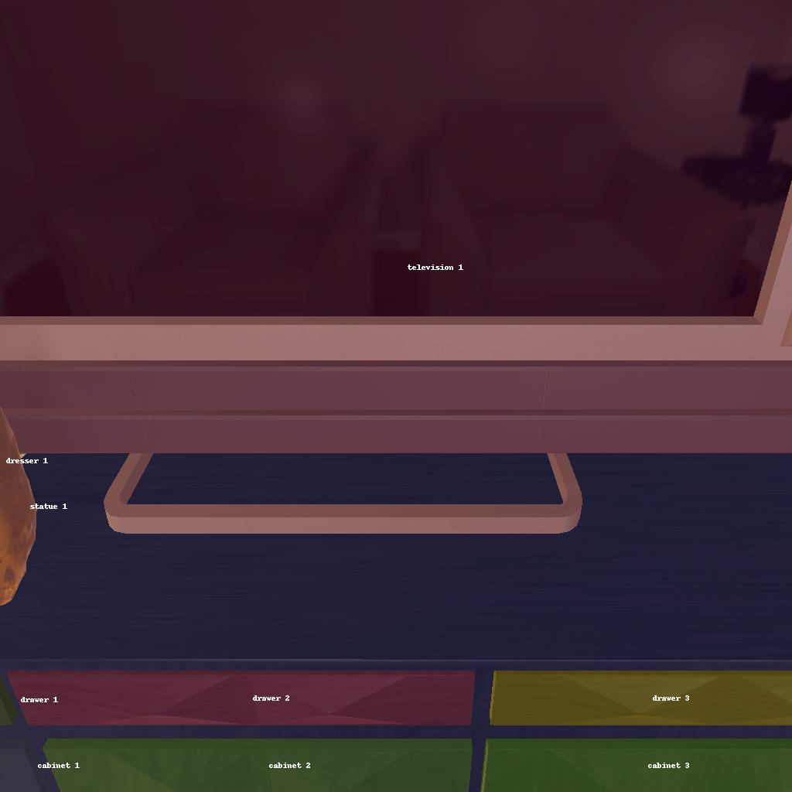

---------------------------------------------------------task: 7---------------------------------------------------------
--------------------------------------------------------------------------------------------------------------------------------------------------------------------
--------------------------------------------------------------------------------------------------------------------------------------------------------------------
Step:--------------------------------------------------------------------------3-------------------------------------------------------------------------------
----------------------------------------
VLM Prompt:
Image1:
**Instruction**
1. Analyze the provided image to identify all visible household objects, focusing on those relevant to the task description "put a creditcard in coffeetable."
2. Use the analysis of the image and the task hint "The agent must find an object of the desired type, pick it up, find the correct location to place it, and put it down there." to answer the question: what is the most reasonable action in the choices for the task description "put a creditcard in coffeetable"?
4. Decide and write the answer using the template: The answer is: (i): , where i is the real number. If there is no desired object in the image, search every place based on **Initial Observation** to find the object. And if no one is exactly correct, choose a similar answer.
**Initial Observation**
You are in the middle of a room. Looking quickly around you, you can see armchair (1-2), dresser (1), garbagecan (1), cabinet (1-4), drawer (1-4), coffeetable (1), sidetable (1), sofa (1)
**Answer Choices**
(1): go to armchair 1
(2): go to armchair 2
(3): go to dresser 1
(4): go to garbagecan 1
(5): go to cabinet 1
(6): go to cabinet 2
(7): go to drawer 3
(8): go to cabinet 3
(9): go to drawer 4
(10): go to cabinet 4
(11): go to sidetable 1
(12): go to sofa 1
(13): open drawer 2
(14): close drawer 2
(15): examine drawer 2
**Answer**
Let's think step by step by following the instructions.
----------------------------------------
----------------------------------------
Original Response:
First, the task is to put a credit card in the coffee table. The image shows a television, dresser, statue, and drawers. None of these objects are the coffee table or a credit card.
Based on the initial observation, we know there is a coffee table in the room, but it's not visible in the image. There is no mention of where a credit card might be, but it could logically be in a drawer, cabinet, or possibly on a side table.
Considering the answer choices, the most reasonable action to achieve the task would be to search the places where a credit card is likely to be found. Since we're trying to place an object and not merely move to a location, we should look for an action that involves interacting with a possible storage location for a credit card.
Looking at the answer choices, (13): open drawer 2 seems like the most reasonable action, as it involves actively searching for an object (the credit card) that could be inside the drawer.
The answer is: (13): open drawer 2.
----------------------------------------
----------------------------------------
>>> Refine Original VLM Response and Get Pure Action: open drawer 2
----------------------------------------
-----------------------------------------------------------------
Running time: 32.31826114654541 seconds
Total Money: 2.0489800000000002
-----------------------------------------------------------------
-----------------------------------------------------------------
Text Observation:You open the drawer 2. The drawer 2 is open. In it, you see a television 1, and a statue 1.
-----------------------------------------------------------------
UNSUCCEED